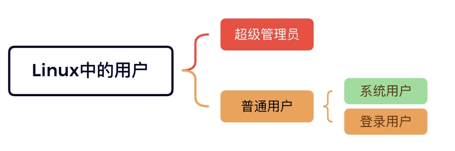
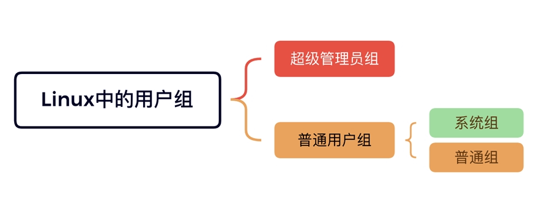
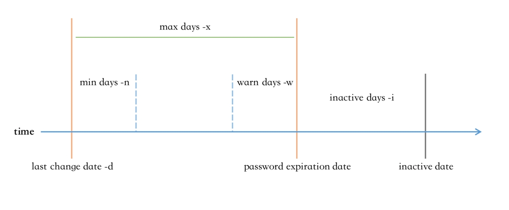
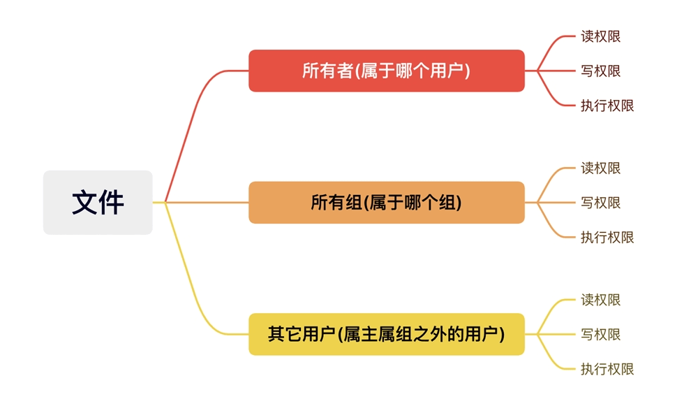
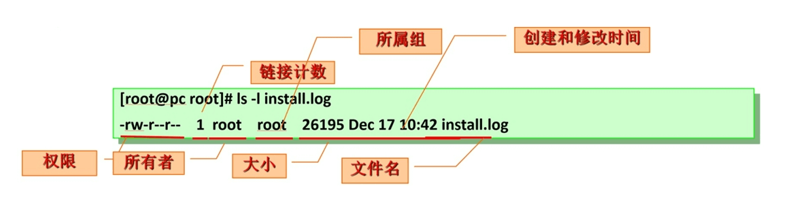
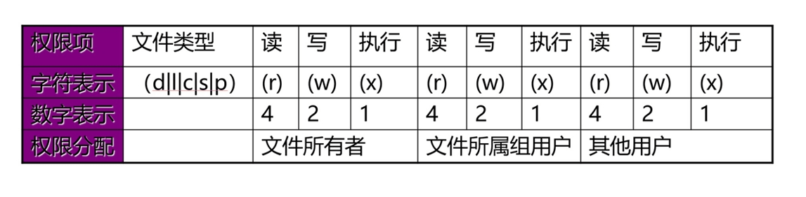
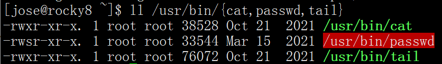
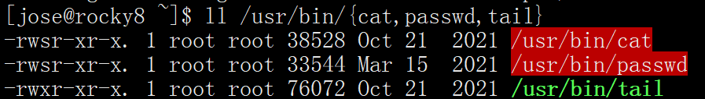

Linux安全模型 资源分派：
Authentication：认证，验证用户身份
Authorization：授权，不同的用户设置不同权限
Accouting|Audition：审计
在Linux系统中，当用户登录成功时，系统会自动分配令牌 token，包括：用户标识和组成员等信息。
3A认证： 又称AAA认证，是一套针对网络设备的网络访问控制策略安全模型。
1 2 3 4 5 6 7 8 9 10 11 12 13 14 15 16 17 18 19 20 21 22 23 24 25 26 27 28 29 30 31 32 33 34 [root@rocky8 ~] Jun 25 07:50:35 rocky8 polkitd[965]: Registered Authentication Agent for unix-session:c1 (system bus name :1.52 [/usr/bin/gnome-shell], object path /org/freedesktop/PolicyKit1/AuthenticationAgent, locale en_US.UTF-8) Jun 25 07:51:52 rocky8 sshd[2413]: Accepted password for root from 10.0.0.1 port 53734 ssh2 Jun 25 07:51:52 rocky8 systemd[2420]: pam_unix(systemd-user:session): session opened for user root by (uid=0) Jun 25 07:51:52 rocky8 sshd[2413]: pam_unix(sshd:session): session opened for user root by (uid=0) [root@centos7 ~] Jun 25 09:58:18 centos7 sshd[16194]: Nasty PTR record "10.0.0.1" is set up for 10.0.0.1, ignoring Jun 25 09:58:21 centos7 unix_chkpwd[16196]: password check failed for user (root) Jun 25 09:58:21 centos7 sshd[16194]: pam_unix(sshd:auth): authentication failure; logname = uid=0 euid=0 tty =ssh ruser= rhost=10.0.0.1 user=root Jun 25 09:58:21 centos7 sshd[16194]: pam_succeed_if(sshd:auth): requirement "uid >= 1000" not met by user "root" Jun 25 09:58:24 centos7 sshd[16194]: Failed password for root from 10.0.0.1 port 55301 ssh2 Jun 25 09:58:25 centos7 sshd[16194]: error: Received disconnect from 10.0.0.1 port 55301:0: [preauth] Jun 25 09:58:25 centos7 sshd[16194]: Disconnected from 10.0.0.1 port 55301 [preauth] root@ubuntu20:~ Jun 25 09:53:58 ubuntu20 systemd-logind[871]: Watching system buttons on /dev/input/event1 (AT Translated Set 2 keyboard) Jun 25 09:55:29 ubuntu20 sshd[1238]: Accepted password for jose from 10.0.0.1 port 55262 ssh2 Jun 25 09:55:29 ubuntu20 sshd[1238]: pam_unix(sshd:session): session opened for user jose by (uid=0) Jun 25 09:55:30 ubuntu20 systemd-logind[871]: New session 1 of user jose. Jun 25 09:55:30 ubuntu20 systemd: pam_unix(systemd-user:session): session opened for user jose by (uid=0) Jun 25 09:55:37 ubuntu20 sudo: jose : TTY=pts/0 ; PWD=/home/jose ; USER=root ; COMMAND=/bin/bash Jun 25 09:55:37 ubuntu20 sudo: pam_unix(sudo:session): session opened for user root by jose(uid=0)
用户 Linux系统是多用户系统，可以同时存在多个用户，每个用户之间都是互相隔离的。
在Linux系统中，每个用户是通过User Id （UID）来唯一标识的。

管理员：root， 0
普通用户：1-60000 自动分配
系统用户：1-499 （CentOS 6以前）， 1-999 （CentOS 7以后） 对守护进程获取资源进行权限分配
登录用户：500+ （CentOS6以前）, 1000+（CentOS7以后） 给用户进行交互式登录使用
在Linux中，root以下，都是普通用户，其用户id为1-60000
用户类型
用户名
用户id（uid）
作用
超级管理员
root(可改)
0
超级管理员
普通用户–系统用户
自定义
1-499 （CentOS 6以前）
给后台程序使用，像nginx，mysql等
普通用户–登录用户
自定义
500+ （CentOS6以前）
给用户进行交互式登录
用户组 Linux中可以将一个或多个用户加入用户组中，组就是包含0个或多个用户的集合，用户组是通过Group ID（GID） 来唯一标识的。

组类型
组名
组id（gid）
作用
超级管理员组
root
0
给超级管理员使用
普通用户组–系统组
自定义
1-499 （CentOS 6以前）
给后台用户使用
普通用户组–普通组
自定义
500+ （CentOS6以前）
给登录用户使用
用户和组的关系
一个用户至少有一个组，也可以有多个组；
一个组至少有0个用户，也可以有多个用户；
用户的主要组(primary group)：又称私有组，一个用户必须属于且只有一个主组，创建用户时，默认会创建与其同名的组作为主组；
用户的附加组(supplementary group)：又称辅助组，一个用户可以属于0个或多个附加组；
使用组，可以对用户进行批量管理，比如对一个组授权，则该组下所有的用户能能继承这个组的权限；
安全上下文 Linux安全上下文Context：
在Linux系统中，运行中的程序（即进程process），都是以进程发起者的身份运行；
进程所能够访问的资源权限取决于进程的运行者的身份；
首先，什么是程序
一个程序或一个命令，本质上也是一个可执行的二进制文件或一个可执行的脚本文件；
在服务器上有很多文件，只有那些特定的，可以被执行的二进制文件，才能被称为程序；
其次，什么是进程
运行中的程序，就是进程；
第三，程序，进程，用户之间的关系是怎样的
只有可以被执行的文件，才能叫作程序；
对于同一个程序，也不是所有用户都可以运行的，这要取决于当前用户对该程序有没有可执行权限；
用户张三，运行了某个程序，那么，张三就发起了一个进程，该进程的发起者，就是张三，该进程是以张三的身份在运行；
打个比方，在交通工具中，只有能在天上飞的，才能叫作飞机；
对于同一架飞机，也不是所有人都能上去的，这要取决于有没有买机票，有没有登机牌；
第四，进程的访问资源
一个进程能不能访问某些资源，是由进程发起者决定的（跟进程本身的程序文件无关），比如某进程要读写某个文件，则要看该进程发起者 有没有权限读取该文件；
一个旅客能不能坐头等舱，是由旅客自己决定的，跟飞机本身无关；
范例：
1 2 3 4 5 6 7 8 9 10 11 12 13 [root@rocky8 ~] Connection closing...Socket close. Connection closed by foreign host. Disconnected from remote host(rocky8.5-2-153) at 11:19:02. Type `help ' to learn how to use Xshell prompt. #普通用户无权限执行 [root@rocky8 ~]# su - jose [jose@rocky8 ~]$ reboot User root is logged in on sshd. Please retry operation after closing inhibitors and logging out other users. Alternatively, ignore inhibitors and users with ' systemctl reboot -i'.
范例：
1 2 3 4 5 6 7 8 9 10 [root@rocky8 ~] root:$6$10pvyo2c4EI8tYh1$PT2yiAT6nrxs9rtjhQFWfDuHyFaV5HARXzn9YZ6wpJKveHccpl5Qoljt7iIlmHxWuy //::0:99999:7::: bin:*:18700:0:99999:7::: daemon:*:18700:0:99999:7::: adm:*:18700:0:99999:7::: ...... [jose@rocky8 ~]$ cat /etc/shadow cat : /etc/shadow: Permission denied
用户和组的配置文件 用户和组的主要配置文件
etc/passwd：用户及其属性信息(名称、UID、主组ID等）
/etc/shadow：用户密码及其相关属性
/etc/group：组及其属性信息
/etc/gshadow：组密码及其相关属性
passwd文件格式 1 2 3 4 5 6 7 8 9 10 11 12 13 14 15 16 17 18 19 20 21 whatis passwd openssl-passwd (1ssl) - compute password hashes passwd (1) - update user's authentication tokens passwd (5) - password file man 5 passwd #查看帮助手册 #文件格式 #login name:password:UID:GID:GECOS:directory:shell root:x:0:0:root:/root:/bin/bash ftp:x:14:50:FTP User:/var/ftp:/sbin/nologin mage:x:1002:1002::/home/mage:/bin/bash login name #登录用户名 password #密码位，x只是表示一个占位符，可为空 UID #用户ID，0 表示超级管理员 GID #所属组ID GECOS #用户全名或注释，描述信息，可为空 directory #用户家目录，在创建用户时，默认会创建在/home 目录下 shell #用户默认shell，/sbin/nologin 表示不用登录的 shell，一般用 chsh 命令修改 chsh -s /bin/csh mage
修改用户shell
1 2 3 4 5 6 7 8 9 [root@rocky8 ~] jose:x:1000:1000:jose:/home/jose:/bin/bash [root@rocky8 ~] Changing shell for jose. Shell changed. [root@rocky8 ~] jose:x:1000:1000:jose:/home/jose:/bin/sh
shadow文件格式 此文件中存储的是用户密码信息，任何用户都无权限
1 2 3 4 5 6 7 8 9 10 11 12 13 14 15 16 17 18 19 20 21 22 23 24 whatis shadow shadow (5) - shadowed password file shadow (3) - encrypted password file routines man 5 shadow root:$6$lwdNTBEpfKFnUipo$Zm4JTG7vVVg6lJaMJ7sPTqmbc /I6GGMIjp7yO.rd6TsKb0lEeRHn4q7Z/LWJvV/FAWgTJVta9Gd78NPVNfld.1::0:99999:7::: ftp:*:18700:0:99999:7::: jose:$6$Cvfl7WE8khYDd /xb$4pNMm .C46MEOUElWyFbRvO2FcGFv/a.EdD9rtWa0jvZdoThq8spMGw4rPbcQzqsY99hW3aImVK4SPR/KJaoSh0:19168:0:99999:7::: login name encrypted password date of last password change minimum password age maximum password age password warning period password inactivity period account expiration date reserved field
所有伪用户的密码都是 “!!” 或 “*”，代表没有密码是不能登录的，新建用户还没设密码时为!!，禁用账号，可以直接在密码字段前加 !
group文件格式 1 2 3 4 5 6 7 8 9 10 11 12 man group ftp:x:50: mage:x:1002: group_name password GID user_list
gshdow文件格式 1 2 3 4 5 6 7 8 9 10 11 man gshadow ftp::: mage:!:: group name encrypted password administrators members
文件操作 可以直接用编辑工具来修改上述文件，但由于跟用户和权限有关的文件具有敏感性，所以系统提供了专用的工具来修改这几个文件。
vipw & vigr
1 2 3 4 5 6 7 8 9 -g|--group -p|--passwd -s|--shadow
pwck & grpck
1 2 3 4 5 6 7 8 9 10 11 12 13 14 15 16 17 -q|--quiet -r|--read-only -R|--root CHROOT_DIR -s|--sort -r|--read-only -R|--root CHROOT_DIR -s|--sort
用户和组管理命令 用户创建 useradd 命令可以创建新的Linux用户
格式：
1 2 3 4 5 6 7 8 9 10 11 12 13 14 15 16 17 18 19 20 21 22 23 24 useradd [options] LOGIN useradd -D useradd -D [options] -u|--uid UID -g|--gid GID -c|--comment COMMENT -d|--home-dir HOME_DIR -s|--shell SHELL -r|--system -m|--create-home -M|--no-create-home -p|--password PASSWORD -o|--non-unique -G|--groups GROUP1[,GROUP2,...] -N|--no-user-group -D|--defaults -e|--expiredate EXPIRE_DATE -f|--inactive INACTIVE -k|--skel SKEL_DIR -K|--key KEY=VALUE -l|--no-log-init
范例:
1 2 3 4 5 6 7 8 [root@rocky8 ~] preinstall scriptlet (using /bin/sh): /usr/sbin/groupadd -g 90 -r postdrop 2>/dev/null /usr/sbin/groupadd -g 89 -r postfix 2>/dev/null /usr/sbin/groupadd -g 12 -r mail 2>/dev/null /usr/sbin/useradd -d /var/spool/postfix -s /sbin/nologin -g postfix -G mail -M -r -u 89 postfix 2>/dev/null
范例:
1 2 3 4 5 6 7 8 9 10 11 12 13 14 15 16 17 18 19 20 21 22 23 24 25 [root@rocky8 ~] groupadd: GID '33' already exists [root@rocky8 ~] [root@rocky8 ~] mysql:x:336: [root@rocky8 ~] mysql:!:: [root@rocky8 ~] [root@rocky8 ~] mysql:x:336:336::/data/mysql:/sbin/nologin [root@rocky8 ~] mysql:!!:19168::::::
默认创建
1 2 3 4 5 6 7 8 9 10 11 12 13 14 15 16 17 [root@rocky8 ~] [root@rocky8 ~] tom:x:1003:1003::/home/tom:/bin/bash [root@rocky8 ~] tom:!!:19168:0:99999:7::: [root@rocky8 ~] tom:x:1003: [root@rocky8 ~] tom:!:: [root@rocky8 ~] . .. .bash_logout .bash_profile .bashrc
useradd 命令默认值设定由/etc/default/useradd定义
1 2 3 4 5 6 7 8 9 10 [root@rocky8 ~] GROUP=100 HOME=/home INACTIVE=-1 EXPIRE= SHELL=/bin/bash SKEL=/etc/skel CREATE_MAIL_SPOOL=yes
显示或更改默认设置
1 2 3 4 5 6 7 8 9 10 11 12 13 14 15 16 17 18 19 20 21 22 23 24 25 26 27 28 [root@rocky8 ~] GROUP=100 HOME=/home INACTIVE=-1 EXPIRE= SHELL=/bin/bash SKEL=/etc/skel CREATE_MAIL_SPOOL=yes [root@rocky8 ~] [root@rocky8 ~] GROUP=100 HOME=/home INACTIVE=-1 EXPIRE= SHELL=/bin/sh SKEL=/etc/skel CREATE_MAIL_SPOOL=yes
家目录模板
1 2 3 4 [root@rocky8 ~] . .. .bash_logout .bash_profile .bashrc
新建用户的相关文件
/etc/default/useradd
/etc/skel/*
/etc/login.defs
批量创建用户
范例：
1 2 3 4 5 6 7 8 9 10 [root@rocky86 ~] u1:123456:1024:1024::/home/u1:/bin/bash u2:123456:1025:1025::/home/u2:/bin/bash [root@rocky86 ~] [root@rocky86 ~] uid=1024(u1) gid=1024(u1) groups =1024(u1) [root@rocky86 ~] uid=1025(u2) gid=1025(u2) groups =1025(u2)
批量修改用户口令
范例：
1 2 3 4 5 6 7 8 9 10 11 12 13 14 15 [root@rocky86 ~] u1:1234567 u2:1234567 [root@rocky86 ~] [root@rocky86 ~] > u1:1234567 > u2:1234567 > EOF [root@rocky86 ~]
范例: CentOS8 生成sha512加密密码
1 2 [root@centos8 ~] $6$UOyYOao .iM2.rPnM$jCpTnBVIQBuGCLOm4N5hqh5YUc3wWXcDzkDMddthpKNL3scOZjTHh9fXds8Eu6gNdEQqLMQgOboipZ08mnz2V .
范例: CentOS7 利用Python程序在 生成sha512加密密码
1 2 [root@centos7 ~] $6$pt0SFMf6YqKea3mh$.7Hkslg17uI.Wu7BcMJStVVtkzrwktXrOC8DxcMFC4JO1igrqR7VAi87H5PHOuLTUEjl7eJqKUhMT1e9ixojn1
范例: CentOS 6 创建并指定基于sha512的用户密码
1 2 3 4 5 6 7 8 9 10 11 12 13 14 15 16 17 18 19 20 21 22 23 24 25 [root@centos6 ~] Usage: grub-crypt [OPTION]... Encrypt a password. -h, --help Print this message and exit -v, --version Print the version information and exit --md5 Use MD5 to encrypt the password --sha-256 Use SHA-256 to encrypt the password --sha-512 Use SHA-512 to encrypt the password (default) Report bugs to <bug-grub@gnu.org>. EOF [root@centos6 ~] Password: Retype password: $6$v9A2 /xUNwAWwEmHN$q7Wz .uscsV/8J5Gss3KslX8hKXOoaP3hDpOBWeBfMQHVIRZiwHUUkii84cvQWIMnvtnXYsdVHuLO4KhOiSOMh/ [root@centos6 ~] '$6$v9A2/xUNwAWwEmHN$q7Wz.uscsV/8J5Gss3KslX8hKXOoaP3hDpOBWeBfMQHVIRZiwHUUkii84cvQWIMnvtnXYsdVHuLO4KhOiSOMh/' test [root@centos6 ~] test :$6$v9A2 /xUNwAWwEmHN$q7Wz .uscsV/8J5Gss3KslX8hKXOoaP3hDpOBWeBfMQHVIRZiwHUUkii84cvQWIMnvtnXYsdVHuLO4KhOiSOMh/:18459:0:99999:7:::
范例: Ubuntu18.04 创建sha512加密密码
1 2 [root@ubuntu1804 ~] $6$RyaXh7L .7fORQBjB$0WXRATSjh3IU .eufhsY5uJpKZwCAGjyAj5r/et9ymohEKsTdMvagEW92t1IAkNte0yVZ88YyMUqx1b6uHIrxM/
用户属性修改 usermod 命令可以修改用户属性
格式:
1 2 3 4 5 6 7 8 9 10 11 12 13 14 15 16 17 18 usermod [options] LOGIN -c|--comment COMMENT -d|--home HOME_DIR -e|--expiredate EXPIRE_DATE -f|--inactive INACTIVE -g|--gid GROUP -G|--groups GROUPS -a|--append GROUP -l|--login LOGIN -L|--lock -m|--move-home -o|--non-unique -p|--password PASSWORD -s|--shell SHELL -u|--uid UID -U|--unlock
修改用户信息
1 2 3 4 5 6 7 8 9 10 [root@rocky8 ~] uid=1003(tom) gid=1003(tom) groups =1003(tom) [root@rocky8 ~] [root@rocky8 ~] id : ‘tom’: no such user[root@rocky8 ~] uid=1003(jerry) gid=1003(tom) groups =1003(tom)
锁定用户
用户被锁定之后将无法登录
1 2 3 4 5 6 7 [root@rocky8 ~] jose:$6$1gfAZcky1hjTfVX0$dcImV6yr9xWzfcfeUI0zXH3p0t0OG71nzUcqD7MoLID8bzsoPKS60CuoGbWv .e.qXzzXknAqTfTWvMlZzpp.i/:19158:0:99999:7::: [root@rocky8 ~] [root@rocky8 ~] jose:!$6$1gfAZcky1hjTfVX0$dcImV6yr9xWzfcfeUI0zXH3p0t0OG71nzUcqD7MoLID8bzsoPKS60CuoGbWv .e.qXzzXknAqTfTWvMlZzpp.i/:19158:0:99999:7:::
解锁用户
1 2 3 4 [root@rocky8 ~] [root@rocky8 ~] jose:$6$1gfAZcky1hjTfVX0$dcImV6yr9xWzfcfeUI0zXH3p0t0OG71nzUcqD7MoLID8bzsoPKS60CuoGbWv .e.qXzzXknAqTfTWvMlZzpp.i/:19158:0:99999:7:::
centos 允许空密码用户登录，所以两个 !!，无法用 -U 选项解锁
所谓解锁，只针对于有密码的用户来说，但是，可以直接修改/etc/shadow 文件，将密码栏置空产生空密码用户
1 2 3 4 5 6 7 8 9 [root@rocky8 ~] jerry:!!:19168:0:99999:7::: [root@rocky8 ~] usermod: unlocking the user's password would result in a passwordless account. You should set a password with usermod -p to unlock this user' s password.[root@rocky8 ~] jerry:!!:19168:0:99999:7:::
删除用户 userdel 可删除Linux 用户
格式：
1 2 3 4 5 userdel [options] LOGIN -f|--force -r|--remove
范例：
1 2 3 4 5 6 7 8 9 10 11 12 13 14 15 16 17 18 19 20 21 22 23 24 25 26 27 28 29 30 31 32 33 34 35 36 37 38 39 40 41 42 [root@rocky8 ~] [root@rocky8 ~] Changing password for user zhangsan. New password: [root@rocky8 ~] uid=1027(zhangsan) gid=1027(zhangsan) groups =1027(zhangsan) [root@rocky8 ~] total 12 drwx------. 2 zhangsan zhangsan 62 Aug 28 16:13 . drwxr-xr-x. 9 root root 87 Aug 28 16:13 .. -rw-r--r--. 1 zhangsan zhangsan 18 Jul 27 2021 .bash_logout -rw-r--r--. 1 zhangsan zhangsan 141 Jul 27 2021 .bash_profile -rw-r--r--. 1 zhangsan zhangsan 376 Jul 27 2021 .bashrc [root@rocky8 ~] -rw-rw----. 1 zhangsan mail 0 Aug 28 16:13 /var/spool/mail/zhangsan [zhangsan@rocky8 ~]$ whoami zhangsan [root@rocky8 ~] userdel: user zhangsan is currently used by process 3325 [root@rocky8 ~] uid=1027(zhangsan) gid=1027(zhangsan) groups =1027(zhangsan) [root@rocky8 ~] userdel: user zhangsan is currently used by process 3325 [root@rocky8 ~] id : ‘zhangsan’: no such user[zhangsan@rocky8 ~]$ whoami whoami : cannot find name for user ID 1027
用户被删除后，其名下的文件无法显示属主属组，只能显示UID
1 2 3 4 5 6 7 8 9 10 [root@rocky8 ~] total 12 drwx------. 2 1027 1027 62 Aug 28 16:13 . drwxr-xr-x. 9 root root 87 Aug 28 16:13 .. -rw-r--r--. 1 1027 1027 18 Jul 27 2021 .bash_logout -rw-r--r--. 1 1027 1027 141 Jul 27 2021 .bash_profile -rw-r--r--. 1 1027 1027 376 Jul 27 2021 .bashrc [root@rocky8 ~] -rw-rw----. 1 1027 mail 0 Aug 28 16:13 /var/spool/mail/zhangsan
如果新建用户，使用了原用户的UID，则可以继承原用户文件
1 2 3 4 5 6 7 8 9 10 11 [root@rocky8 ~] [root@rocky8 ~] total 0 drwx------. 2 lisa lisa 62 Aug 28 16:19 lisa drwx------. 2 lisa lisa 62 Aug 28 16:13 zhangsan [root@rocky8 ~] total 0 -rw-rw----. 1 lisa mail 0 Aug 28 16:19 lisa -rw-rw----. 1 lisa mail 0 Aug 28 16:13 zhangsan
删除用户文件
1 2 3 4 5 6 7 [root@rocky8 ~] [root@rocky8 ~] ls : cannot access '/home/lisa' : No such file or directory[root@rocky8 ~] ls : cannot access '/var/spool/mail/lisa' : No such file or directory
查看用户相关的ID信息 id 命令可以查看用户的UID，GID等信息
格式：
1 2 3 4 5 6 7 8 9 id [OPTION]... [USER]-a -Z|--context -g|--group -G|--groups -n|--name -u|--user
范例：
1 2 3 4 5 6 7 8 9 10 11 12 13 14 15 16 17 [root@rocky8 ~] uid=0(root) gid=0(root) groups =0(root) context=unconfined_u:unconfined_r:unconfined_t:s0-s0:c0.c1023 [root@rocky8 ~] uid=0(root) gid=0(root) groups =0(root) context=unconfined_u:unconfined_r:unconfined_t:s0-s0:c0.c1023 [root@rocky8 ~] root [root@rocky8 ~] uid=89(postfix) gid=89(postfix) groups =89(postfix),12(mail) [root@rocky8 ~] 89 12 [root@rocky8 ~] postfix mail
切换用户或以其他用户身份执行命令 如果在当前登录终端中，要执行某条命令，但当前登录用户又没有可执行权限或没有某些资源权限；
则在此种情况下，我们可以：
让有权限的用户登录终端，再执行相应的操作；
在当前终端终，临时切换，以有权限的用户的身份去执行命令；
su: 即 switch user，命令可以切换用户身份，并且以指定用户的身份执行命令
格式：
1 2 3 4 5 6 7 8 9 10 11 su [options...] [-] [user [args...]] -m|-p|--preserve-environment -g|--group group -|-l|--login -c|--command command --session-command command -f|--fast -s|--shell shell -P|--pty
切换用户的方式：
su UserName：非登录式切换，即不会读取目标用户的配置文件，不改变当前工作目录，即不完全切换
su - UserName：登录式切换，会读取目标用户的配置文件，切换至自已的家目录，即完全切换
说明：root su至其他用户无须密码；非root用户切换时需要密码
注意：su 切换新用户后，使用 exit 退回至旧的用户身份，而不要再用 su 切换至旧用户，否则会生成很多的bash子进程，环境可能会混乱。
完全切换和不完全切换的区别
1 2 3 4 5 6 7 8 9 10 11 12 13 14 15 16 17 18 19 20 21 22 23 24 25 26 27 28 29 30 31 [jose@rocky8 ~]$ pwd /home/jose [jose@rocky8 ~]$ echo $PATH /home/jose/.local/bin:/home/jose/bin:/usr/local/bin:/usr/bin:/usr/local/sbin:/usr/sbin [jose@rocky8 ~]$ su root Password: [root@rocky8 jose] /home/jose [root@rocky8 jose] /home/jose/.local/bin:/home/jose/bin:/usr/local/bin:/usr/bin:/usr/local/sbin:/usr/sbin [jose@rocky8 ~]$ pwd /home/jose [jose@rocky8 ~]$ echo $PATH /home/jose/.local/bin:/home/jose/bin:/usr/local/bin:/usr/bin:/usr/local/sbin:/usr/sbin [jose@rocky8 ~]$ su - root Password: [root@rocky8 ~] /root [root@rocky8 ~] /usr/local/sbin:/usr/local/bin:/usr/sbin:/usr/bin:/root/bin
直接以另一个用户执行命令，而不切换用户
1 2 3 4 5 6 7 8 9 10 11 12 13 14 15 16 17 18 19 20 [root@rocky8 ~] [jose@rocky8 ~]$ touch jose-1.txt [jose@rocky8 ~]$ exit logout [root@rocky8 ~] [root@rocky8 ~] -rw-rw-r--. 1 jose jose 0 Jun 25 16:14 /home/jose/jose-1.txt-rw-rw-r--. 1 jose jose 0 Jun 25 16:16 /home/jose/jose-2.txt [root@rocky8 ~] [jose@rocky8 ~]$ id uid=1000(jose) gid=1000(jose) groups =1000(jose) [jose@rocky8 ~]$ exit logout [root@rocky8 ~] uid=1000(jose) gid=1000(jose) groups =1000(jose)
使用/sbin/nologin shell的用户无法切换，ubnutn 中 使用/bin/false shell的用户同样无法切换
1 2 3 4 5 6 7 8 9 10 11 12 13 14 15 16 17 18 [root@rocky8 ~] mysql:x:336:336::/data/mysql:/sbin/nologin [root@rocky8 ~] This account is currently not available. [root@rocky8 ~] This account is currently not available. [root@rocky8 ~] [mysql@rocky8 ~]$ id uid=336(mysql) gid=336(mysql) groups =336(mysql) [root@rocky8 ~] nologin
设置密码 passwd 可以修改用户密码
格式：
1 2 3 4 5 6 7 8 9 10 11 12 13 14 15 passwd [OPTION...] <accountName> -k|--keep-tokens -d|--delete -l|--lock -u|--unlock -e|--expire -f|--force -x|--maximum=DAYS -n|--minimum=DAYS -w|--warning=DAYS -i|--inactive=DAYS -S|--status --stdin
普通用户修改自己密码
1 2 3 4 5 6 [jose@rocky8 ~]$ passwd Changing password for user jose. Current password: New password: Retype new password: passwd: all authentication tokens updated successfully.
root修改其它用户密码
1 2 3 4 5 [root@rocky8 ~] Changing password for user jose. New password: Retype new password: passwd: all authentication tokens updated successfully.
修改密码其实就是更新 /etc/shadow 文件
1 2 root@rocky8 ~] ----------. 1 root root 1475 Jun 25 17:16 /etc/shadow
非交互式修改用户密码
1 2 3 4 5 6 7 8 9 10 11 12 13 14 15 [root@rocky8 ~] Changing password for user jose. passwd: all authentication tokens updated successfully. [root@rocky8 ~] Changing password for user jose. passwd: all authentication tokens updated successfully. root@ubuntu20:~ New password: Retype new password: passwd: password updated successfully
设置用户下次必须更改密码
1 2 3 4 5 6 7 8 9 [root@rocky8 ~] Expiring password for user jose. passwd: Success WARNING: Your password has expired. You must change your password now and login again! Changing password for user jose. Current password:
修改用户密码策略 chage 可以修改用户密码策略
格式：
1 2 3 4 5 6 7 8 9 10 chage [options] LOGIN -d LAST_DAY -m|--mindays MIN_DAYS -M|--maxdays MAX_DAYS -W|--warndays WARN_DAYS -I|--inactive INACTIVE -E|--expiredate EXPIRE_DATE -l
查看用户密码策略
1 2 3 4 5 6 7 8 [root@rocky8 ~] Last password change : Aug 28, 2024 Password expires : never Password inactive : never Account expires : never Minimum number of days between password change : 0 Maximum number of days between password change : 99999 Number of days of warning before password expires : 7
范例：
1 2 3 4 5 6 7 8 9 10 11 12 13 14 15 16 17 [root@rocky8 ~] Changing the aging information for jose Enter the new value, or press ENTER for the default Minimum Password Age [0]: 3 Maximum Password Age [99999]: 42 Last Password Change (YYYY-MM-DD) [2024-08-28]: 2024-09-28 Password Expiration Warning [7]: 10 Password Inactive [-1]: 20 Account Expiration Date (YYYY-MM-DD) [-1]: 2025-09-28 [root@rocky8 ~] jose:$6$MTmNRV3dYLAyImT /$BmrAmj7CPB0UoGaT9Yx0EnRp7524hu92Z3fct19Ok1F1EPJTxrXYzTQ7jezSX3LeEIuIiysy7VxaNpXJ7Rp0I0 :19994:3:42:10:20:20359: [root@rocky8 ~] jose:$6$MTmNRV3dYLAyImT /$BmrAmj7CPB0UoGaT9Yx0EnRp7524hu92Z3fct19Ok1F1EPJTxrXYzTQ7jezSX3LeEIuIiysy7VxaNpXJ7Rp0I0 :20021:3:42:10:20:20359:
密码文件中各时间字段的表示：

创建组 groupadd实现创建组
格式
1 2 3 4 5 6 7 8 9 groupadd [options] GROUP -f|--force -g|--gid GID -K|--key KEY=VALUE -o|--non-unique -p|--password PASSWORD -r|--system
范例：
1 2 3 4 5 6 7 8 9 10 11 [root@rocky8 ~] [root@rocky8 ~] apache:x:48: [root@rocky8 ~] groupadd: group 'apache' already exists [root@rocky8 ~]
修改组 groupmod 组属性修改
格式：
1 2 3 4 5 6 7 groupmod [options] GROUP -g|--gid GID -n|--new-name NEW_GROUP -o|--non-unique -p|--password PASSWORD
范例：
1 2 3 4 5 6 7 8 9 10 11 12 [root@rocky8 ~] apache:x:48: [root@rocky8 ~] [root@rocky8 ~] apache:x:123: [root@rocky8 ~] [root@rocky8 ~] apache2:x:123:
组删除 groupdel 可以删除组
格式:
1 2 3 4 groupdel [options] GROUP -f|--force
范例
1 2 3 4 5 6 7 8 9 10 11 [root@rocky8 ~] [root@rocky8 ~] [root@rocky8 ~] groupdel: cannot remove the primary group of user 'jose' groupdel -f jose
更改组成员和密码 gpasswd命令，可以更改组密码，也可以修改附加组的成员关系
组没有密码的情况下，加组只能由root来操作
格式：
1 2 3 4 5 6 7 8 9 gpasswd [option] GROUP -a|--add USER -d|--delete USER -r|--delete-password -R|--restrict -M|--members USER,... -A|--administrators ADMIN,...
范例：
1 2 3 4 5 6 7 8 9 10 11 12 13 14 15 16 17 18 19 20 21 22 [root@rocky8 ~] [root@rocky8 ~] group1:!:: [root@rocky8 ~] jose : jose [root@rocky8 ~] uid=1000(jose) gid=1000(jose) groups =1000(jose) [root@rocky8 ~] Adding user jose to group group1 [root@rocky8 ~] group1:!::jose [root@rocky8 ~] jose : jose group1 [root@rocky8 ~] uid=1000(jose) gid=1000(jose) groups =1000(jose),1004(group1)
范例:设置组密码
1 2 3 4 5 6 7 [root@rocky8 ~] Changing the password for group group1 New Password: Re-enter new password: [root@rocky8 ~] group1:$6$rzTQ3ausQlnwJ7$keMsE9m3u .GeBfrOoEsFUty6hRxJbzOC4s88aE/5MTGjpvyjtYljM8tf59AvrKdbNKLL.bdcU.i/KAhXN8CbZ.::jose
范例：移除组成员
1 2 3 4 5 [root@rocky8 ~] Removing user jose from group group1 [root@rocky8 ~] jose : jose
更改和查看组成员 groupmems 可以管理附加组的成员关系
格式：
1 2 3 4 5 6 7 8 groupmems [options] [action] -g|--group groupname -a|--add username -d|--delete username -p|--purge -l|--list
范例：
1 2 3 4 5 6 7 8 9 10 11 [root@rocky8 ~] [root@rocky8 ~] [root@rocky8 ~] jose [root@rocky8 ~] uid=1000(jose) gid=1000(jose) groups =1000(jose),1004(group1)
groups 可查看用户组关系
格式：
1 2 groups [OPTION].[USERNAME]...
临时切换组
练习
创建用户 gentoo，附加组为 bin 和 root，默认shell为/bin/csh，注释信息为”Gentoo Distribution”
1 2 3 4 5 6 7 [root@rocky8 ~] [root@rocky8 ~] [root@rocky8 ~] [root@rocky8 ~] gentoo:x:1027:1028:Gentoo Distribution:/home/gentoo:/bin/csh [root@rocky8 ~] gentoo : gentoo bin root
创建下面的用户、组和组成员关系
名字为webs 的组
用户nginx，使用webs 作为附加组
用户varnish，使用webs 作为附加组
用户mysql，不可交互登录系统，且不是webs 的成员，
nginx，varnish，mysql密码都是magedu
1 2 3 4 5 6 7 8 9 10 11 12 13 14 15 16 17 18 19 20 21 22 23 24 25 26 27 [root@rocky8 ~] [root@rocky8 ~] [root@rocky8 ~] [root@rocky8 ~] [root@rocky8 ~] [root@rocky8 ~] [root@rocky8 ~] [root@rocky8 ~] nginx : nginx webs varnish : varnish webs mysql : mysql webs [root@rocky8 ~] nginx:magedu:19964:0:99999:7::: [root@rocky8 ~] varnish:magedu:19964:0:99999:7::: [root@rocky8 ~] mysql:magedu:19964:::::: [root@rocky8 ~] [root@rocky8 ~] nginx:$6$fdJmB3 /eHJtA9K$njLiITa6Q .KSGRXXXKeU3Dt1sxPeNTgmbRoP21PBUu/w2zSN/GfRFYsOXuuKPNUxijWpgvF5VADgfQh9ytUGo.:19964:0:99999:7::: [root@rocky8 ~] varnish:$6$Vp0OM7Q /Zp/jhqi$ltPfhm4C8Dw .UYCF/KlaCZfSoVAQ0O9yApyh.8vuJdGtC9nQltQl2RCBDZbQ/Lve6oJy5GPL1CKvCprPDfzr6/:19964:0:99999:7::: [root@rocky8 ~] mysql:$6$xPotg /k5$MsNdG4ZR4u /Drekp4GPFy/SmgG8HedQfPxa1mhC98hnk1mDHLi9SRaq5pHsshPkucseces2CdJKloON2btIDt0:19964::::::
文件权限管理 Linux中的权限体系介绍 在Linux系统中，一切皆文件；
对文件来讲，系统中的用户，分属于三类不同的角色，分别是属主，属组，其它用户；
而每个角色用户，对该文件的权限，也分三种，分别是读，写，执行；

三种角色：
角色
英文表示
字符表示
属主：所有者
owner|OWNER|user
u
属组：属于哪个组
group|GROUP
g
其他用户：不是所有者，
other|OTHER
o
三种权限：
权限
英文表示
字符表示
八进制表示
读权限
read|Readable
r
4
写权限
write|Writable
w
2
执行权限
execute|eXcutable
x
1
程序访问文件时的权限，取决于此程序的发起者
进程的发起者，同文件的属主：则应用文件属主权限
进程的发起者，属于文件属组；则应用文件属组权限
应用文件“其它”权限

文件所有者和属组属性操作 设置文件的所有者chown chown 命令可以修改文件的属主，也可以修改文件属组
格式：
1 2 3 4 5 6 7 8 9 10 11 12 13 14 15 16 17 18 19 20 21 22 23 24 25 26 chown [OPTION]... [OWNER][:[GROUP]] FILE...chown [OPTION]... --reference=RFILE FILE...OWNER OWNER:GROUP :GROUP -c|--changes -f|--silent|--quiet -v|--verbose --dereference -h|--no-dereference --from=user:group --no-preserve-root --preserve-root --reference=RFILE -R|--recursive -H -L -P
范例：修改属主
1 2 3 4 5 6 7 8 9 10 11 12 13 14 15 16 17 18 19 20 21 22 23 24 25 26 27 28 29 30 31 32 33 34 35 36 37 [root@rocky8 0626] total 0 -rw-r--r--. 1 root root 0 Jun 26 10:34 a1.txt -rw-r--r--. 1 root root 0 Jun 26 10:34 a2.txt -rw-r--r--. 1 root root 0 Jun 26 10:34 a3.txt -rw-r--r--. 1 root root 0 Jun 26 10:34 a4.txt -rw-r--r--. 1 root root 0 Jun 26 10:34 a5.txt -rw-r--r--. 1 root root 0 Jun 26 10:34 a6.txt -rw-r--r--. 1 root root 0 Jun 26 10:34 a7.txt [root@rocky8 0626] [root@rocky8 0626] [root@rocky8 0626] [root@rocky8 0626] -rw-r--r--. 1 jose root 0 Jun 26 10:34 a1.txt -rw-r--r--. 1 jose jose 0 Jun 26 10:34 a2.txt -rw-r--r--. 1 jose jose 0 Jun 26 10:34 a3.txt [root@rocky8 0626] [root@rocky8 0626] chown : invalid user: ‘1000.’ [root@rocky8 0626] chown : invalid spec: ‘1000:’ [root@rocky8 0626] -rw-r--r--. 1 jose root 0 Jun 26 10:34 a4.txt -rw-r--r--. 1 root root 0 Jun 26 10:34 a5.txt -rw-r--r--. 1 root root 0 Jun 26 10:34 a6.txt
范例：修改属组
1 2 3 4 5 6 7 8 9 10 11 12 13 14 15 16 17 18 19 20 21 22 23 24 25 26 27 28 29 30 31 [root@rocky8 0626] [root@rocky8 0626] -rw-r--r--. 1 root root 0 Jun 26 10:40 b1.txt -rw-r--r--. 1 root root 0 Jun 26 10:40 b2.txt -rw-r--r--. 1 root root 0 Jun 26 10:40 b3.txt -rw-r--r--. 1 root root 0 Jun 26 10:40 b4.txt -rw-r--r--. 1 root root 0 Jun 26 10:40 b5.txt -rw-r--r--. 1 root root 0 Jun 26 10:40 b6.txt [root@rocky8 0626] [root@rocky8 0626] [root@rocky8 0626] -rw-r--r--. 1 root jose 0 Jun 26 10:40 b1.txt -rw-r--r--. 1 root jose 0 Jun 26 10:40 b2.txt [root@rocky8 0626] [root@rocky8 0626] [root@rocky8 0626] [root@rocky8 0626] -rw-r--r--. 1 root jose 0 Jun 26 10:40 b4.txt -rw-r--r--. 1 root jose 0 Jun 26 10:40 b5.txt -rw-r--r--. 1 root 789 0 Jun 26 10:40 b6.txt [root@rocky8 b] [root@rocky8 b] -rw-r--r--. 1 root test 0 Aug 29 16:48 b6.txt
范例：同时修改
1 2 3 4 5 6 7 8 9 10 11 12 13 14 15 16 17 18 19 20 21 [root@rocky8 0626] -rw-r--r--. 1 root root 0 Jun 26 10:46 c1.txt -rw-r--r--. 1 root root 0 Jun 26 10:46 c2.txt -rw-r--r--. 1 root root 0 Jun 26 10:46 c3.txt -rw-r--r--. 1 root root 0 Jun 26 10:46 c4.txt -rw-r--r--. 1 root root 0 Jun 26 10:46 c5.txt [root@rocky8 0626] [root@rocky8 0626] [root@rocky8 0626] chown : invalid group: ‘jose:nogroup’[root@rocky8 0626] [root@rocky8 0626] [root@rocky8 0626] -rw-r--r--. 1 jose tom 0 Jun 26 10:58 c1.txt -rw-r--r--. 1 jose 123 0 Jun 26 10:58 c2.txt -rw-r--r--. 1 root root 0 Jun 26 10:58 c3.txt -rw-r--r--. 1 jerry jose 0 Jun 26 10:58 c4.txt -rw-r--r--. 1 123 456 0 Jun 26 10:58 c5.tx
范例：
1 2 3 4 5 6 7 8 9 10 11 12 13 14 [root@rocky8 0626] -rw-r--r--. 1 123 456 0 Jun 26 11:02 f1.txt -rw-r--r--. 1 root root 0 Jun 26 11:02 f2.txt [root@rocky8 0626] [root@rocky8 0626] -rw-r--r--. 1 123 456 0 Jun 26 11:02 f1.txt -rw-r--r--. 1 123 456 0 Jun 26 11:02 f2.txt chown -R jose.tom dir1/
设置文件的属组信息chgrp chgrp 命令可以只修改文件的属组
格式：
1 2 3 4 5 6 7 8 9 10 11 12 13 14 15 16 17 18 19 chgrp [OPTION]... GROUP FILE... chgrp [OPTION]... --reference=RFILE FILE... -c|--changes -f|--silent|--quiet -v|--verbose --dereference -h|--no-dereference --no-preserve-root --preserve-root --reference=RFILE -R|--recursive -H -L -P
范例：
1 2 3 4 5 6 7 8 9 10 11 12 13 14 15 16 17 18 19 20 21 22 23 24 25 26 27 28 29 30 31 32 33 34 35 36 37 38 [root@rocky8 0626] total 0 -rw-r--r--. 1 root root 0 Jun 26 11:14 f1.txt -rw-r--r--. 1 root root 0 Jun 26 11:14 f2.txt -rw-r--r--. 1 root root 0 Jun 26 11:14 f3.txt [root@rocky8 0626] [root@rocky8 0626] [root@rocky8 0626] total 0 -rw-r--r--. 1 root jose 0 Jun 26 11:14 f1.txt -rw-r--r--. 1 root 123 0 Jun 26 11:14 f2.txt [root@rocky8 0626] [root@rocky8 0626] total 0 -rw-r--r--. 1 root root 0 Jun 26 11:17 a lrwxrwxrwx. 1 root root 1 Jun 26 11:17 a.link -> a [root@rocky8 0626] [root@rocky8 0626] total 0 -rw-r--r--. 1 root mage 0 Jun 26 11:17 a lrwxrwxrwx. 1 root root 1 Jun 26 11:17 a.link -> a [root@rocky8 0626] [root@rocky8 0626] total 0 -rw-r--r--. 1 root mage 0 Jun 26 11:17 a lrwxrwxrwx. 1 root 123 1 Jun 26 11:17 a.link -> a
文件权限 文件权限说明 角色定义
角色
在命令中的字符
备注
owner
u
属主
group
g
属组
other
o
其他用户
all
a
所有人，包括属主属组和其他用户
赋值写法
在命令中的字符
备注
+
增加某些权限
-
删除某些权限
=
只保留某些权限，覆盖写法
权限表示方法
权限
在命令中的字符
八进制数字表示
备注
Readable
r
4
读权限
Writable
w
2
写权限
eXcutable
x
1
执行权限
常用写法
1 2 3 4 5 u+r g-x ug=rx o= a=rwx
注意：
用户的最终权限，是从左向右进行顺序匹配，即，所有者，所属组，其他人，一旦匹配权限立即生效，不再向右查看其权限
r和w权限对root 用户无效，对没有读写权限的文件，root用户也可读可写
只要所有者，所属组或other三者之一有x权限，root就可以执行
权限作用
权限
对文件
对目录
r
可查看文件内容
可读取目录中的文件名，但文件元数据无法查看
w
可修改文件内容
可在目录中创建文件和删除文件
x
可执行，发起为一个进程
可进入目录，查看文件元数据，
面试题：
Linux中的目录和文件的权限区别？分别说明读，写和执行权限的区别
数学法的权限

字符表示
二进制表示
八进制表示
备注
—
000
0
无任何权限
–x
001
1
可执行
-w-
010
2
可写
-wx
011
3
可写可执行
r–
100
4
可读
r-x
101
5
可读可执行
rw-
110
6
可读可写
rwx
111
7
可读可写可执行
示例：
字符表示
八进制数字表示
备注
rw-r—–
640
属主可读写，属组可读，其他用户无任何权限
rw-r–r–
644
属主可读写，属组可读，其他用户可读
rwxr-xr-x
755
属主可读写，可执行，属组可读可执行，其他用户可读可执行
修改文件权限chmod 格式
1 2 3 4 5 6 7 8 9 10 11 12 13 14 15 16 17 18 19 20 chmod [OPTION]... MODE[,MODE]... FILE...chmod [OPTION]... OCTAL-MODE FILE...chmod [OPTION]... --reference=RFILE FILE...-c|--changes -f|--silent|--quiet -v|--verbose --no-preserve-root --preserve-root --reference=RFILE -R|--recursive who opt permisson who opt permission
范例：修改权限
1 2 3 4 5 6 7 8 9 10 11 12 13 14 15 16 17 18 19 20 [root@rocky8 t] total 0 -rw-r--r--. 1 root root 0 Aug 30 17:20 f1 -rw-r--r--. 1 root root 0 Aug 30 17:20 f2 -rw-r--r--. 1 root root 0 Aug 30 17:20 f3 -rw-r--r--. 1 root root 0 Aug 30 17:20 f4 [root@rocky8 t] [root@rocky8 t] [root@rocky8 t] [root@rocky8 t] [root@rocky8 t] total 0 ----------. 1 root root 0 Aug 30 17:20 f1 -r---w---x. 1 root root 0 Aug 30 17:20 f2 -rw-r-----. 1 root root 0 Aug 30 17:20 f3 -rwxrwxrwx. 1 root root 0 Aug 30 17:20 f4
范例：
1 2 3 4 5 6 7 8 9 10 11 12 13 14 15 [root@rocky8 t] total 0 -rw-r--r--. 1 root root 0 Aug 30 17:23 a1 -rw-r--r--. 1 root root 0 Aug 30 17:23 a2 -rw-r--r--. 1 root root 0 Aug 30 17:23 a3 [root@rocky8 t] [root@rocky8 t] [root@rocky8 t] [root@rocky8 t] total 0 -rw-r--r--. 1 root root 0 Aug 30 17:23 a1 ----------. 1 root root 0 Aug 30 17:23 a2 -rwxrwxrwx. 1 root root 0 Aug 30 17:23 a3
范例：错误写法
1 2 3 [root@rocky8 t] chmod : invalid mode: ‘u+4’Try 'chmod --help' for more information.
范例：递归操作
1 2 3 4 [root@rocky8 0626] [root@rocky8 0626]
范例：目录权限
1 2 3 4 5 6 7 8 9 10 11 12 13 14 15 16 17 18 19 20 21 22 23 24 25 26 27 28 29 30 31 32 33 34 35 36 37 38 39 40 41 42 43 44 45 46 47 48 49 50 51 52 53 54 55 56 57 58 59 60 61 62 63 64 65 66 67 68 69 70 71 72 73 74 75 76 77 78 79 80 81 82 83 84 85 86 [jose@rocky8 ~]$ ll -d dir1/ drwxrwxr-x. 2 jose jose 24 Aug 30 17:37 dir1/ [jose@rocky8 ~]$ ll dir1/ total 0 -rw-rw-r--. 1 jose jose 0 Aug 30 17:37 a -rw-rw-r--. 1 jose jose 0 Aug 30 17:37 b [jose@rocky8 ~]$ chmod a= dir1/ [jose@rocky8 ~]$ ll -d dir1/ d---------. 2 jose jose 24 Aug 30 17:37 dir1/ [jose@rocky8 ~]$ ls dir1/ ls : cannot open directory 'dir1/' : Permission denied[jose@rocky8 ~]$ stat dir1/a stat : cannot statx 'dir1/a' : Permission denied[jose@rocky8 ~]$ rm dir1/a rm : cannot remove 'dir1/a' : Permission denied[jose@rocky8 ~]$ chmod u+r dir1/ [jose@rocky8 ~]$ ls dir1/ ls : cannot access 'dir1/a' : Permission deniedls : cannot access 'dir1/b' : Permission denieda b [jose@rocky8 ~]$ stat dir1/a stat : cannot statx 'dir1/a' : Permission denied[jose@rocky8 ~]$ rm dir1/a rm : cannot remove 'dir1/a' : Permission denied[jose@rocky8 ~]$ cd dir1/ -bash: cd : dir1/: Permission denied [jose@rocky8 ~]$ chmod u+w dir1/ [jose@rocky8 ~]$ ll -d dir1/ drw-------. 2 jose jose 24 Aug 30 17:37 dir1/ [jose@rocky8 ~]$ ls dir1/ ls : cannot access 'dir1/a' : Permission deniedls : cannot access 'dir1/b' : Permission denieda b [jose@rocky8 ~]$ ll dir1/ ls : cannot access 'dir1/a' : Permission deniedls : cannot access 'dir1/b' : Permission deniedtotal 0 -????????? ? ? ? ? ? a -????????? ? ? ? ? ? b [jose@rocky8 ~]$ cd dir1/ -bash: cd : dir1/: Permission denied [jose@rocky8 ~]$ rm dir1/a rm : cannot remove 'dir1/a' : Permission denied[jose@rocky8 ~]$ touch dir1/c touch : cannot touch 'dir1/c' : Permission denied [jose@rocky8 ~]$ chmod u+x dir1/ [jose@rocky8 ~]$ ll -d dir1/ drwx------. 2 jose jose 24 Aug 30 17:37 dir1/ [jose@rocky8 ~]$ ll dir1/ total 0 -rw-rw-r--. 1 jose jose 0 Aug 30 17:37 a -rw-rw-r--. 1 jose jose 0 Aug 30 17:37 b [jose@rocky8 ~]$ cd dir1/ [jose@rocky8 dir1]$ touch c [jose@rocky8 dir1]$ rm a [jose@rocky8 dir1]$ ls b c
范例：面试题
1 2 3 4 5 6 执行 cp /etc/issue /data/dir/ 所需要的最小权限？ /bin/cp 需要x权限 /etc/ 需要x权限 /etc/issue 需要r权限 /data 需要x权限 /data/dir 需要w,x权限
新建文件和目录的默认权限 在linux 系统中，新建文件或目录，都有一个默认权限；
umask 值间接影响新建文件和新建目录的权限：
新建文件：666-umask，按位对应相减，如果所得结果某位存在执行（奇数）权限，则该位+1；
新建目录：777-umask；
1 2 3 4 5 6 umask [-p] [-S] [mode]-p -S
范例：查看umask
1 2 3 4 5 6 7 8 9 10 11 12 [root@rocky8 ~] 0022 [root@rocky8 ~] umask 0022[root@rocky8 ~] u=rwx,g=rx,o=rx
范例：修改umask
1 2 3 4 5 6 7 8 9 10 11 [root@rocky8 ~] [root@rocky8 ~] 0123 [root@rocky8 ~] u=rw,g=rx,o=r [root@rocky8 ~] [root@rocky8 ~] 0137
非特权用户umask默认是 002
root的umask 默认是 022
持久保存umask
全局设置：/etc/bashrc
用户设置：~/.bashrc
范例：
1 2 3 4 5 6 7 8 9 10 [root@rocky8 ~] 0022 [root@rocky8 ~] [root@rocky8 ~] 0022 [root@rocky8 ~] ----------. 1 root root 0 Aug 31 10:01 /data/f1.txt
Linux文件系统上的特殊权限 在Linux中，除了rwx 这三种常⻅的权限之外，还有三个特殊权限，分别是 SUID， SGID，Sticky；这三个特殊权限独⽴于rwx权限体系；
特殊权限
SUID： 作用于二进制可执行文件上，用户将继承此程序所有者的权限；
SGID：作用于二进制可执行文件上，用户将继承此程序所有组的权限；
作用于目录上，此目录中新建的文件的所属组将自动从此目录继承；
STICKY：作用于目录上，此目录中的文件只能由所有者自已和root来删除；
权限
字符表示
八进制表示
备注
SUID
s
4
如果原属主没有可执行权限，再加SUID权限，则显示为S
SGID
s
2
如果原属组没有可执行权限，再加SGID权限，则显示为S
STICKY
t
1
如果other没有可执行权限，再加STICKY权限，则显示为T
特殊权限SUID 前提：进程有属主和属组；文件有属主和属组
任何一个可执行程序文件能不能启动为进程，取决发起者对程序文件是否拥有执行权限
启动为进程之后，其进程的属主为发起者，进程的属组为发起者所属的组
进程访问文件时的权限，取决于进程的发起者
二进制的可执行文件上SUID权限功能：
任何一个可执行程序文件能不能启动为进程：取决发起者对程序文件是否拥有执行权限
启动为进程之后，其进程的属主为原程序文件的属主
SUID只对二进制可执行程序有效
SUID设置在目录上无意义
SUID权限设定：
1 2 3 chmod u+s FILE...chmod 4xxx FILEchmod u-s FILE...
范例：
1 2 3 4 5 6 7 8 9 10 11 12 13 14 [jose@rocky8 ~]$ ll /etc/shadow ----------. 1 root root 1475 Jun 26 14:02 /etc/shadow [jose@rocky8 ~]$ cat /etc/shadow cat : /etc/shadow: Permission denied [jose@rocky8 ~]$ passwd Changing password for user jose. Current password: New password: Retype new password: passwd: all authentication tokens updated successfully.

范例：

1 2 3 4 5 6 [jose@rocky8 ~]$ cat /etc/shadow root:$6$fdNu ..2c3pyXSdCH$nnaRho78 /QFuPTvvoYirO6t44KAeMTEOIjgjypBXHAlgEWaBtXxMYf1/JQbySwC6OPekLERPlYn7NXRABRiGa.::0:99999:7::: bin:*:18700:0:99999:7::: daemon:*:18700:0:99999:7::: adm:*:18700:0:99999:7:::
特殊权限SGID 二进制的可执行文件上SGID权限功能：
任何一个可执行程序文件能不能启动为进程：取决发起者对程序文件是否拥有执行权限
启动为进程之后，其进程的属组为原程序文件的属组
SGID权限设定：
1 2 3 chmod g+s FILE... chmod 2xxx FILEchmod g-s FILE...
目录上的SGID权限功能：
默认情况下，用户创建文件时，其属组为此用户所属的主组，一旦某目录被设定了SGID，则对此目录有写权限的用户在此目录中创建的文件 所属的组为此目录的属组，通常用于创建一个协作目录
范例：
1 2 3 4 5 6 7 8 9 10 11 12 13 14 15 16 17 18 19 20 21 22 23 24 [jose@rocky8 ~]$ ll -d dir1/ drwxrwxr-x. 2 jose jose 42 Aug 31 10:38 dir1/ [jose@rocky8 ~]$ ll dir1/ total 0 -rw-rw-r--. 1 jose jose 0 Aug 31 10:38 jose-1.txt -rw-r--r--. 1 root root 0 Aug 31 10:38 root-1.txt [jose@rocky8 ~]$ chmod g+s dir1/ [jose@rocky8 ~]$ touch dir1/jose-2.txt [jose@rocky8 ~]$ su root -c "touch dir1/root-2.txt" [jose@rocky8 ~]$ ll dir1/ -d drwxrwsr-x. 2 jose jose 78 Aug 31 10:40 dir1/ [jose@rocky8 ~]$ ll dir1/ total 0 -rw-rw-r--. 1 jose jose 0 Aug 31 10:38 jose-1.txt -rw-rw-r--. 1 jose jose 0 Aug 31 10:39 jose-2.txt -rw-r--r--. 1 root root 0 Aug 31 10:38 root-1.txt -rw-r--r--. 1 root jose 0 Aug 31 10:40 root-2.txt
特殊权限 Sticky 位 具有写权限的目录通常用户可以删除该目录中的任何文件，无论用户是否对文件有权限
在目录设置Sticky 位，只有文件的所有者或root可以删除该文件
sticky 设置在文件上无意义
Sticky权限设定：
1 2 3 chmod o+t DIR...chmod 1xxx DIRchmod o-t DIR...
范例：
1 2 3 4 5 6 7 8 9 10 11 12 13 14 15 16 17 18 19 20 21 22 23 24 25 26 27 28 29 30 31 32 33 34 35 36 37 38 39 40 41 42 43 44 [root@rocky8 /] [root@rocky8 /] [root@rocky8 /] [root@rocky8 /] [root@rocky8 /] [root@rocky8 /] drwxrwxrwx. 2 root root 61 Aug 31 10:52 dir1/ [root@rocky8 /] total 0 -rw-r--r--. 1 jerry tom 0 Aug 31 10:52 jerry-1.txt -rw-rw-r--. 1 jose jose 0 Aug 31 10:52 jose-1.txt -rw-r--r--. 1 root root 0 Aug 31 10:51 root-1.txt [jose@rocky8 ~]$ rm -f /dir1/root-1.txt [jose@rocky8 ~]$ rm -f /dir1/jerry-1.txt [jose@rocky8 ~]$ ll /dir1/ total 0 -rw-rw-r--. 1 jose jose 0 Aug 31 10:52 jose-1.txt [root@rocky8 /] [root@rocky8 /] drwxrwxrwt. 2 root root 24 Aug 31 10:54 /dir1/ [root@rocky8 /] [root@rocky8 /] [root@rocky8 /] total 0 -rw-r--r--. 1 jerry tom 0 Aug 31 10:55 jerry-2.txt -rw-rw-r--. 1 jose jose 0 Aug 31 10:52 jose-1.txt -rw-r--r--. 1 root root 0 Aug 31 10:55 root-2.txt [jose@rocky8 ~]$ rm -f /dir1/jerry-2.txt rm : cannot remove '/dir1/jerry-2.txt' : Operation not permitted[jose@rocky8 ~]$ rm -f /dir1/root-2.txt rm : cannot remove '/dir1/root-2.txt' : Operation not permitted
范例：查看目录中的sticky权限
1 2 3 4 5 [root@rocky8 /] drwxrwxrwt. 2 root root 61 Aug 31 10:55 /dir1/ [root@rocky8 /] dir1/: sticky, directory
特殊权限数字法
字符表示
二进制表示
八进制表示
备注
———
000
0
无任何特殊权限
——–t
001
1
Sticky
—–s—
010
2
SGID
—–s–t
011
3
SGID,Sticky
–s——
100
4
SUID
–s—–t
101
5
SUID,Sticky
–s–s—
110
6
SUID,SGID
–s–s–t
111
7
SUID,SGID,Sticky
范例：
权限位映射
SUID: user,占据属主的执行权限位
s：属主拥有x权限
S：属主没有x权限
SGID: group,占据属组的执行权限位
s： group拥有x权限
S：group没有x权限
Sticky: other,占据other的执行权限位
t：other拥有x权限
T：other没有x权限
设定文件特殊属性 格式：
1 2 3 4 5 6 7 8 9 10 11 12 13 14 15 16 17 18 19 20 21 chattr [-pRVf] [-+=aAcCdDeijPsStTuF] [-v version] files... -p project -R -V -f -v version +attribute -attribute =attribute a A c i s u
显示文件特殊属性
1 lsattr [-RVadlpv] [files...]
范例：+i 防止误删除
1 2 3 4 5 6 7 8 9 10 11 12 13 14 15 16 17 18 19 20 21 22 23 24 25 26 27 28 29 30 31 [root@rocky8 ~] [root@rocky8 ~] [root@rocky8 ~] -rw-r-----. 1 root root 5 Jun 26 14:43 a.txt [root@rocky8 ~] ----i--------------- a.txt [root@rocky8 ~] rm : cannot remove 'a.txt' : Operation not permitted [root@rocky8 ~] -bash: a.txt: Operation not permitted [root@rocky8 ~] -bash: a.txt: Operation not permitted [root@rocky8 ~] [root@rocky8 ~] mv : cannot move 'a.txt' to '/tmp/a.txt' : Operation not permitted [root@rocky8 ~] abcd
范例：+a 一般用于日志文件
1 2 3 4 5 6 7 8 9 10 11 12 13 14 15 16 17 18 19 [root@rocky8 ~] [root@rocky8 ~] [root@rocky8 ~] -rw-r-----. 1 root root 5 Jun 26 14:49 b.txt [root@rocky8 ~] -----a-------------- b.txt [root@rocky8 ~] rm : cannot remove 'b.txt' : Operation not permitted[root@rocky8 ~] -bash: b.txt: Operation not permitted [root@rocky8 ~]
访问控制列表 ACL ACL权限功能 rwx 权限体系中，仅仅只能将用户分成三种角色，如果要对单独用户设置额外的权限，则无法完成；
而ACL可以单独对指定的用户设定各不相同的权限；提供颗粒度更细的权限控制；
CentOS7 默认创建的xfs和ext4文件系统具有ACL功能
CentOS7 之前版本，默认手工创建的ext4文件系统无ACL功能，需手动增加
1 2 tune2fs –o acl /dev/sdb1 mount –o acl /dev/sdb1 /mnt/test
ACL生效顺序：
ACL相关命令 setfacl 可设置ACL权限
getfacl 可查看设置的ACL权限
范例
1 2 3 4 5 6 7 8 9 10 11 12 13 14 15 16 17 setfacl [-bkndRLPvh] [{-m|-x} acl_spec] [{-M|-X} acl_file] file ... -m|--modify=acl -M|--modify-file=file -x|--remove=acl -X|--remove-file=file -b|--remove-all -k|--remove-default --set =acl --set-file=file --mask -n|--no-mask -d|--default -R|--recursive -L|--logical -P|--physical
范例：
1 2 3 4 5 6 7 8 9 10 11 12 13 14 15 16 17 18 19 20 21 22 23 24 25 26 27 28 29 30 31 32 33 34 35 36 37 38 39 40 41 42 43 44 45 46 47 48 49 50 51 52 53 54 55 56 57 58 [root@rocky8 tmp] [root@rocky8 tmp] -rw-r--r--. 1 root root 5 Jun 26 19:59 f1 [root@rocky8 tmp] abcd [root@rocky8 tmp] [root@rocky8 tmp] user::rw- user:mage:--- group::r-- mask::r-- other::r-- [root@rocky8 tmp] -rw-r--r--+ 1 root root 5 Jun 26 19:59 f1 [root@rocky8 tmp] cat : /tmp/f1: Permission denied [root@rocky8 tmp] abcd [root@rocky8 tmp] -bash: /tmp/f1: Permission denied [root@rocky8 tmp] [root@rocky8 tmp] user::rw- user:mage:--- user:jerry:rw- group::r-- mask::rw- other::r-- [root@rocky8 tmp] [root@rocky8 tmp] abcd 1234
范例：给组加ACL
1 2 3 4 5 6 7 8 9 10 11 12 13 [root@rocky8 tmp] [root@rocky8 tmp] user::rw- user:mage:--- user:jerry:rw- group::r-- group:tom:rwx mask::rwx other::r--
范例：从文件复制ACL
1 2 3 4 5 6 7 8 9 10 11 12 13 14 15 16 17 18 19 20 21 22 23 24 25 26 27 28 29 30 31 32 33 34 35 36 37 38 39 40 41 42 43 44 45 [root@rocky8 tmp] user::rw- user:mage:--- user:jerry:rw- group::r-- group:tom:rwx mask::rwx other::r-- user::rw- group::r-- other::r-- [root@rocky8 tmp] [root@rocky8 tmp] user::rw- user:mage:--- user:jerry:rw- group::r-- group:tom:rwx mask::rwx other::r-- user::rw- user:mage:--- user:jerry:rw- group::r-- group:tom:rwx mask::rwx other::r--
范例：移除ACL权限
1 2 3 4 5 6 7 8 9 10 11 12 [root@rocky8 tmp] [root@rocky8 tmp] [root@rocky8 tmp] user::rw- user:jerry:rw- group::r-- mask::rw- other::r--
范例：移除文件上所有ACL权限
1 2 3 4 5 6 7 8 9 10 11 12 13 14 15 16 [root@rocky8 tmp] -rw-rw-r--+ 1 root root 10 Jun 26 20:19 f1 [root@rocky8 tmp] [root@rocky8 tmp] user::rw- group::r-- other::r-- [root@rocky8 tmp] -rw-r--r--. 1 root root 10 Jun 26 20:19 f1
范例：–set替换
1 2 3 4 5 6 7 8 9 10 11 12 13 14 15 16 17 18 19 20 21 22 23 24 25 26 27 28 29 [root@rocky8 tmp] -rw-rwxr--+ 1 root root 3 Jun 26 20:17 f2 [root@rocky8 tmp] user::rw- user:mage:--- user:jerry:rw- group::r-- group:tom:rwx mask::rwx other::r-- [root@rocky8 tmp] [root@rocky8 tmp] -rw-------+ 1 root root 3 Jun 26 20:17 f2 [root@rocky8 tmp] user::rw- user:jerry:--- group::--- mask::--- other::---
mask 权限
mask只影响除所有者和other的之外的人和组的最大权限
mask需要与用户的权限进行逻辑与运算后，才能变成有限的权限(Effective Permission)
用户或组的设置必须存在于mask权限设定范围内才会生效
范例：
1 setfacl -m mask::rx file